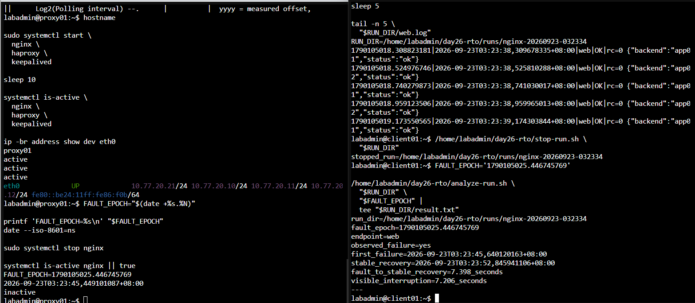
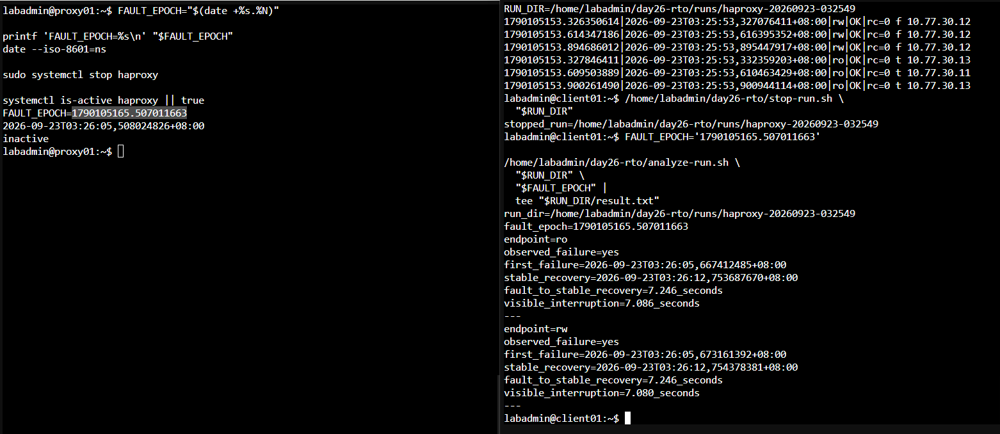
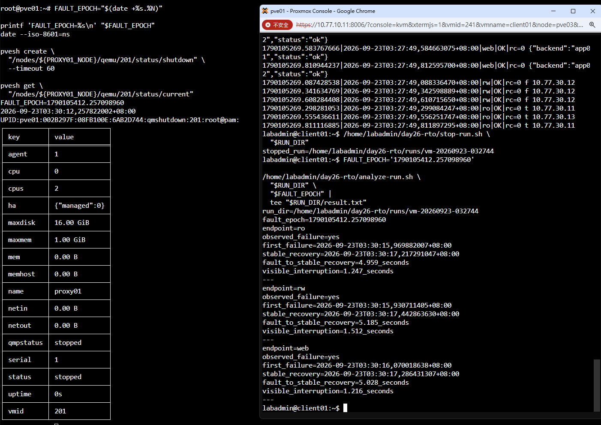
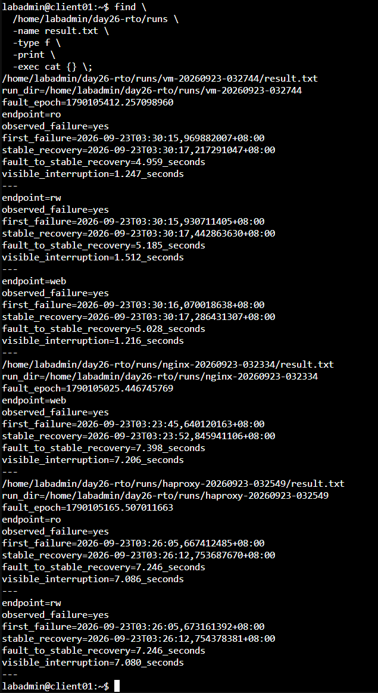

Day 26 額外實作：量測三組 VIP 的故障切換時間
本篇接續 Day 26 Keepalived 與三組 VIP。主實作先完成三組固定入口與接管驗證；這裡改用 0.2 秒探測保存每次請求結果，自動計算故障注入到穩定恢復，以及用戶端真正觀察到的中斷時間。
本次補測三種情境：
- 停止 proxy01 的 Nginx，量測 Web VIP。
- 停止 proxy01 的 HAProxy，量測 DB-RW 與 DB-RO VIP。
- 正常關閉 proxy01 VM，量測三組 VIP。
探測間隔為 0.2 秒。切換後連續三次成功中的第一筆，視為穩定恢復時間。結果會自動列出：
- 故障注入時間。
- 第一次失敗時間。
- 穩定恢復時間。
- 故障注入到穩定恢復秒數。
- 第一次失敗到穩定恢復的可見中斷秒數。
如果探測沒有捕捉到失敗，結果會顯示 observed_failure=no 與 visible_interruption=not_observed，不可解讀為中斷時間 0 秒。
一、確認三端時間同步
分別在 client01、proxy01 與稍後操作 VM 的 PVE 節點執行：
hostname
date --iso-8601=ns
timedatectl show -p NTPSynchronized --value
最後一行都應為 yes。故障到恢復的起點與終點來自不同主機，因此時間未同步時不要開始量測。
1.1 proxy01、proxy02 或 client01 顯示 no
在顯示 no 的 Debian VM 執行下列完整命令。這三台位於 Service VLAN，使用 OPNsense 的 10.77.20.1 作為共同時間來源：
hostname
sudo timedatectl set-timezone Asia/Taipei
sudo apt update
sudo apt install -y chrony
echo 'server 10.77.20.1 iburst prefer' | \
sudo tee /etc/chrony/sources.d/opnsense.sources
sudo systemctl disable --now systemd-timesyncd 2>/dev/null || true
sudo systemctl enable --now chrony
sudo systemctl restart chrony
sudo chronyc makestep
chronyc waitsync 30 0.1
systemctl is-enabled chrony
systemctl is-active chrony
chronyc tracking
chronyc sources -n -v
date --iso-8601=ns
timedatectl show \
-p Timezone \
-p NTPSynchronized
確認結果：
chrony為enabled與active。chronyc tracking的Leap status為Normal。chronyc sources -n -v中至少有一個來源以^*開頭；本次預期為10.77.20.1。NTPSynchronized=yes。
如果 chronyc waitsync 30 0.1 完成後顯示未同步，執行以下診斷並保留輸出，完成時間同步後再進行 RTO 測試：
hostname
ip route
systemctl status chrony --no-pager -l
sudo chronyc online
sudo chronyc burst 4/4
sleep 5
chronyc tracking
chronyc sources -n -v
sudo journalctl -u chrony -b -n 100 -o short-iso-precise --no-pager
此時要檢查 OPNsense 是否向 Service VLAN 提供 NTP，以及防火牆是否允許這些 VM 連往 10.77.20.1 的 UDP 123。
1.2 PVE 節點顯示 no
PVE 已使用 Chrony。先執行既有服務的重新同步，不要在這裡更換 NTP 套件：
hostname
systemctl is-enabled chrony
systemctl is-active chrony
chronyc sources -n -v
systemctl restart chrony
chronyc makestep
chronyc waitsync 30 0.1
chronyc tracking
chronyc sources -n -v
date --iso-8601=ns
timedatectl show \
-p Timezone \
-p NTPSynchronized
PVE 顯示 no 時，保留 chronyc tracking、chronyc sources -n -v 與 journalctl -u chrony 的輸出，先修正既有時間來源或 NTP 防火牆規則，再執行本次測試。
二、在 client01 建立量測腳本
以下步驟全部在 client01 執行。
2.1 建立目錄並確認依賴
hostname
mkdir -p \
/home/labadmin/day26-rto/runs
command -v curl
command -v psql
ls -l \
/home/labadmin/.pgpass \
/etc/iron-app/pg-ca.crt
2.2 建立 probe.sh
nano \
/home/labadmin/day26-rto/probe.sh
完整貼入：
#!/bin/bash
set -u
export LC_ALL=C
probe_type="${1:?usage: probe.sh web|rw|ro RUN_DIR}"
run_dir="${2:?usage: probe.sh web|rw|ro RUN_DIR}"
log_file="${run_dir}/${probe_type}.log"
while true; do
epoch="$(date +%s.%N)"
iso_time="$(date --iso-8601=ns)"
case "$probe_type" in
web)
output="$(
curl \
-fsS \
--connect-timeout 1 \
--max-time 1 \
http://web.lab.home/health \
2>&1
)"
rc=$?
if [ "$rc" -eq 0 ]; then
if ! printf '%s' "$output" |
grep -Eq '"status"[[:space:]]*:[[:space:]]*"ok"'; then
output="unexpected_web_response ${output}"
rc=4
fi
fi
;;
rw)
output="$(
PGOPTIONS='-c statement_timeout=1000' \
psql \
'host=db-rw.lab.home port=5432 dbname=appdb user=app_rw sslmode=verify-full sslrootcert=/etc/iron-app/pg-ca.crt connect_timeout=1' \
-w \
-Atqc \
'SELECT pg_is_in_recovery(),inet_server_addr();' \
2>&1
)"
rc=$?
if [ "$rc" -eq 0 ]; then
case "$output" in
f'|'*) ;;
*)
output="unexpected_rw_role ${output}"
rc=4
;;
esac
fi
;;
ro)
output="$(
PGOPTIONS='-c statement_timeout=1000' \
psql \
'host=db-ro.lab.home port=5432 dbname=appdb user=app_ro sslmode=verify-full sslrootcert=/etc/iron-app/pg-ca.crt connect_timeout=1' \
-w \
-Atqc \
'SELECT pg_is_in_recovery(),inet_server_addr();' \
2>&1
)"
rc=$?
if [ "$rc" -eq 0 ]; then
case "$output" in
t'|'*) ;;
*)
output="unexpected_ro_role ${output}"
rc=4
;;
esac
fi
;;
*)
echo 'usage: probe.sh web|rw|ro RUN_DIR' >&2
exit 2
;;
esac
output="$(printf '%s' "$output" | tr '\n|' ' ')"
if [ "$rc" -eq 0 ]; then
status='OK'
else
status='FAIL'
fi
printf '%s|%s|%s|%s|rc=%s %s\n' \
"$epoch" \
"$iso_time" \
"$probe_type" \
"$status" \
"$rc" \
"$output" \
>> "$log_file"
sleep 0.2
done
按 Ctrl+O、Enter 儲存，再按 Ctrl+X 離開：
chmod 750 \
/home/labadmin/day26-rto/probe.sh
bash -n \
/home/labadmin/day26-rto/probe.sh
腳本只有在 Web 回應包含 "status":"ok"、DB-RW 回傳 f、DB-RO 回傳 t 時記為 OK；內容或資料庫角色不符時，會以 rc=4 記錄。
2.3 建立 start-run.sh
nano \
/home/labadmin/day26-rto/start-run.sh
完整貼入：
#!/bin/bash
set -eu
base_dir='/home/labadmin/day26-rto'
scenario="${1:?usage: start-run.sh nginx|haproxy|vm}"
stamp="$(date +%Y%m%d-%H%M%S)"
run_dir="${base_dir}/runs/${scenario}-${stamp}"
case "$scenario" in
nginx)
probe_types='web'
;;
haproxy)
probe_types='rw ro'
;;
vm)
probe_types='web rw ro'
;;
*)
echo 'usage: start-run.sh nginx|haproxy|vm' >&2
exit 2
;;
esac
mkdir -p "$run_dir"
for probe_type in $probe_types; do
nohup \
"$base_dir/probe.sh" \
"$probe_type" \
"$run_dir" \
>/dev/null 2>&1 &
printf '%s\n' "$!" \
> "${run_dir}/${probe_type}.pid"
done
printf '%s\n' "$run_dir"
儲存後執行：
chmod 750 \
/home/labadmin/day26-rto/start-run.sh
bash -n \
/home/labadmin/day26-rto/start-run.sh
2.4 建立 stop-run.sh
nano \
/home/labadmin/day26-rto/stop-run.sh
完整貼入：
#!/bin/bash
set -eu
run_dir="${1:?usage: stop-run.sh RUN_DIR}"
for pid_file in "$run_dir"/*.pid; do
[ -e "$pid_file" ] || continue
pid="$(cat "$pid_file")"
kill "$pid" 2>/dev/null || true
done
sleep 1
printf 'stopped_run=%s\n' "$run_dir"
儲存後執行：
chmod 750 \
/home/labadmin/day26-rto/stop-run.sh
bash -n \
/home/labadmin/day26-rto/stop-run.sh
2.5 建立 analyze-run.sh
nano \
/home/labadmin/day26-rto/analyze-run.sh
完整貼入：
#!/bin/bash
set -eu
run_dir="${1:?usage: analyze-run.sh RUN_DIR FAULT_EPOCH}"
fault_epoch="${2:?usage: analyze-run.sh RUN_DIR FAULT_EPOCH}"
printf 'run_dir=%s\n' "$run_dir"
printf 'fault_epoch=%s\n' "$fault_epoch"
for log_file in "$run_dir"/*.log; do
[ -e "$log_file" ] || continue
endpoint="$(basename "$log_file" .log)"
awk \
-F '|' \
-v fault="$fault_epoch" \
-v endpoint="$endpoint" '
($1 + 0) < (fault + 0) {
next
}
$4 == "FAIL" {
if (!saw_failure) {
saw_failure=1
first_failure_epoch=$1
first_failure_iso=$2
}
consecutive_ok=0
candidate_epoch=""
candidate_iso=""
next
}
$4 == "OK" && !saw_failure {
if (pre_failure_ok == 0) {
first_three_ok_epoch=$1
first_three_ok_iso=$2
}
pre_failure_ok++
if (pre_failure_ok >= 3 && confirmed_three_ok_epoch == "") {
confirmed_three_ok_epoch=first_three_ok_epoch
confirmed_three_ok_iso=first_three_ok_iso
}
next
}
$4 == "OK" && saw_failure && stable_recovery_epoch == "" {
if (consecutive_ok == 0) {
candidate_epoch=$1
candidate_iso=$2
}
consecutive_ok++
if (consecutive_ok >= 3) {
stable_recovery_epoch=candidate_epoch
stable_recovery_iso=candidate_iso
}
}
END {
printf "endpoint=%s\n", endpoint
if (!saw_failure) {
print "observed_failure=no"
if (confirmed_three_ok_epoch != "") {
printf "first_three_ok_after_fault=%s\n", confirmed_three_ok_iso
printf "fault_to_first_three_ok=%.3f_seconds\n", \
confirmed_three_ok_epoch-fault
} else {
print "first_three_ok_after_fault=not_found"
}
print "visible_interruption=not_observed"
} else {
print "observed_failure=yes"
printf "first_failure=%s\n", first_failure_iso
if (stable_recovery_epoch == "") {
print "stable_recovery=not_found"
} else {
printf "stable_recovery=%s\n", stable_recovery_iso
printf "fault_to_stable_recovery=%.3f_seconds\n", \
stable_recovery_epoch-fault
printf "visible_interruption=%.3f_seconds\n", \
stable_recovery_epoch-first_failure_epoch
}
}
print "---"
}
' \
"$log_file"
done
儲存後執行：
chmod 750 \
/home/labadmin/day26-rto/analyze-run.sh
bash -n \
/home/labadmin/day26-rto/analyze-run.sh
四個 bash -n 都沒有輸出才繼續。
三、量測 Nginx 故障
3.1 在 proxy01 恢復正常基準
hostname
sudo systemctl start \
nginx \
haproxy \
keepalived
sleep 10
systemctl is-active \
nginx \
haproxy \
keepalived
ip -br address show dev eth0
proxy01 應持有 10.77.20.10、10.77.20.11、10.77.20.12。
3.2 在 client01 啟動 Web 探測
RUN_DIR="$(
/home/labadmin/day26-rto/start-run.sh nginx
)"
printf 'RUN_DIR=%s\n' "$RUN_DIR"
sleep 5
tail -n 5 \
"$RUN_DIR/web.log"
最後五行應為 web|OK。
3.3 在 proxy01 停止 Nginx
FAULT_EPOCH="$(date +%s.%N)"
printf 'FAULT_EPOCH=%s\n' "$FAULT_EPOCH"
date --iso-8601=ns
sudo systemctl stop nginx
systemctl is-active nginx || true
複製完整 FAULT_EPOCH。
3.4 在 client01 分析結果
等待至少 20 秒，再執行：
/home/labadmin/day26-rto/stop-run.sh \
"$RUN_DIR"
把下一行換成本次 Nginx 故障的數值：
FAULT_EPOCH='請貼上本次 Nginx 停止時的完整數值'
/home/labadmin/day26-rto/analyze-run.sh \
"$RUN_DIR" \
"$FAULT_EPOCH" |
tee "$RUN_DIR/result.txt"
📷 截圖完整結果。若顯示 observed_failure=no，這是有效結果，不必重做到出現失敗。
完成後在 proxy01 恢復：
sudo systemctl start nginx
sleep 10
systemctl is-active nginx
ip -br address show dev eth0
四、量測 HAProxy 故障
4.1 在 client01 啟動 RW 與 RO 探測
RUN_DIR="$(
/home/labadmin/day26-rto/start-run.sh haproxy
)"
printf 'RUN_DIR=%s\n' "$RUN_DIR"
sleep 5
tail -n 3 "$RUN_DIR/rw.log"
tail -n 3 "$RUN_DIR/ro.log"
RW 應為 OK 且內容包含 f；RO 應為 OK 且內容包含 t。
4.2 在 proxy01 停止 HAProxy
FAULT_EPOCH="$(date +%s.%N)"
printf 'FAULT_EPOCH=%s\n' "$FAULT_EPOCH"
date --iso-8601=ns
sudo systemctl stop haproxy
systemctl is-active haproxy || true
複製完整 FAULT_EPOCH。
4.3 在 client01 分析結果
等待至少 25 秒，再執行：
/home/labadmin/day26-rto/stop-run.sh \
"$RUN_DIR"
把下一行換成本次 HAProxy 故障的數值：
FAULT_EPOCH='請貼上本次 HAProxy 停止時的完整數值'
/home/labadmin/day26-rto/analyze-run.sh \
"$RUN_DIR" \
"$FAULT_EPOCH" |
tee "$RUN_DIR/result.txt"
📷 截圖需包含 endpoint=ro 與 endpoint=rw 的完整結果。
完成後在 proxy01 恢復：
sudo systemctl start haproxy
sleep 10
systemctl is-active haproxy
ip -br address show dev eth0
五、量測 proxy01 VM 正常關機
5.1 在 client01 啟動三組探測
RUN_DIR="$(
/home/labadmin/day26-rto/start-run.sh vm
)"
printf 'RUN_DIR=%s\n' "$RUN_DIR"
sleep 5
tail -n 3 "$RUN_DIR/web.log"
tail -n 3 "$RUN_DIR/rw.log"
tail -n 3 "$RUN_DIR/ro.log"
三組都應為 OK。
5.2 在任一 PVE 節點找出 VM 201 所在節點
PROXY01_NODE="$(
pvesh get \
/cluster/resources \
--type vm \
--output-format json |
perl -MJSON::PP -0777 -ne '
$resources = decode_json($_);
for $resource (@$resources) {
if (($resource->{type} // "") eq "qemu" &&
($resource->{vmid} // 0) == 201) {
print $resource->{node};
last;
}
}
'
)"
printf 'PROXY01_NODE=%s\n' "$PROXY01_NODE"
if [ -z "$PROXY01_NODE" ]; then
echo 'ERROR: VM 201 was not found in cluster resources' >&2
else
pvesh get \
"/nodes/${PROXY01_NODE}/qemu/201/status/current"
fi
結果應顯示 PROXY01_NODE=實際節點名稱，並列出 VM 201 的目前狀態。若顯示 ERROR，先不要執行關機步驟。
5.3 在同一台 PVE 正常關閉 VM 201
FAULT_EPOCH="$(date +%s.%N)"
printf 'FAULT_EPOCH=%s\n' "$FAULT_EPOCH"
date --iso-8601=ns
pvesh create \
"/nodes/${PROXY01_NODE}/qemu/201/status/shutdown" \
--timeout 60
pvesh get \
"/nodes/${PROXY01_NODE}/qemu/201/status/current"
複製完整 FAULT_EPOCH。
5.4 在 client01 分析結果
等待至少 30 秒，再執行：
/home/labadmin/day26-rto/stop-run.sh \
"$RUN_DIR"
把下一行換成本次 VM 關機的數值：
FAULT_EPOCH='請貼上本次 VM 關機時的完整數值'
/home/labadmin/day26-rto/analyze-run.sh \
"$RUN_DIR" \
"$FAULT_EPOCH" |
tee "$RUN_DIR/result.txt"
📷 截圖需包含 endpoint=ro、endpoint=rw 與 endpoint=web 的完整結果。
5.5 重新啟動 proxy01
在 PVE 執行：
pvesh create \
"/nodes/${PROXY01_NODE}/qemu/201/status/start"
pvesh get \
"/nodes/${PROXY01_NODE}/qemu/201/status/current"
等待 proxy01 開機，再於 proxy01 執行：
hostname
systemctl is-active \
nginx \
haproxy \
keepalived
sleep 10
ip -br address show dev eth0
六、彙整測試結果
在 client01 執行：
find \
/home/labadmin/day26-rto/runs \
-name result.txt \
-type f \
-print \
-exec cat {} \;
將輸出與 /home/labadmin/day26-rto/runs/ 下的原始 Log 一起保存，才能回頭核對自動分析結果。
本次實測結果
| 故障情境 | 入口 | 故障到穩定恢復 | 可見中斷 |
|---|---|---|---|
| 停止 proxy01 Nginx | Web | 7.398 秒 | 7.206 秒 |
| 停止 proxy01 HAProxy | DB-RO | 7.246 秒 | 7.086 秒 |
| 停止 proxy01 HAProxy | DB-RW | 7.246 秒 | 7.080 秒 |
| 正常關閉 proxy01 VM | DB-RO | 4.959 秒 | 1.247 秒 |
| 正常關閉 proxy01 VM | DB-RW | 5.185 秒 | 1.512 秒 |
| 正常關閉 proxy01 VM | Web | 5.028 秒 | 1.216 秒 |

圖（一）停止 proxy01 的 Nginx 後，腳本量出 Web 入口的第一次失敗與穩定恢復時間

圖（二）停止 proxy01 的 HAProxy 後，DB-RW 與 DB-RO 一起接管並維持正確角色

圖（三）PVE 正常關閉 proxy01 後，三組入口都由 proxy02 接管

圖（四）三次 result.txt 的完整彙整結果
故障注入發生在 proxy01 或 PVE，穩定恢復時間由 client01 記錄，因此「故障到穩定恢復」以測試前各端已完成時間同步為前提。「可見中斷」的起點與終點都來自 client01，同一主機內的時間差不受跨主機時鐘偏差影響。
Nginx 與 HAProxy 停止後幾乎立即出現探測失敗，因此故障到穩定恢復與可見中斷相差約 0.2 秒。VM 正常關機時，停止命令送出後會有一段可服務時間；故障注入到穩定恢復約為 5 秒，用戶端真正觀察到的中斷則介於 1.216 至 1.512 秒。
這些數值只代表本次硬體、VRRP 計時器、健康檢查、網路與 0.2 秒探測條件。突然斷電、網路分割、較高負載或不同重試策略都可能得到不同結果。若要與 RTO 比較，應先定義目標值，再以相同方法重複量測多次。